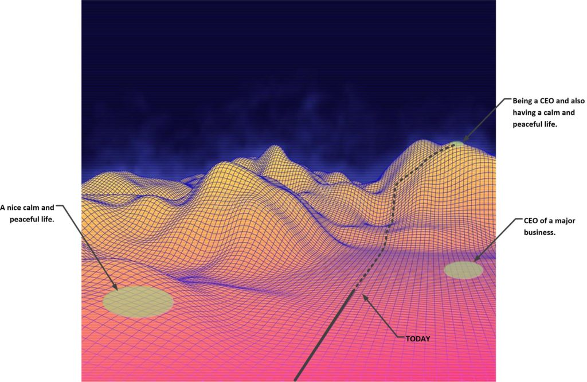
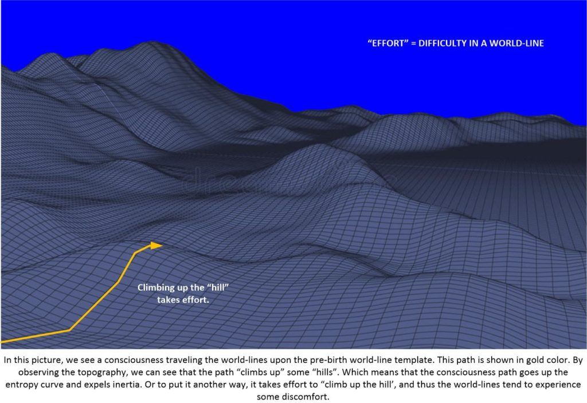
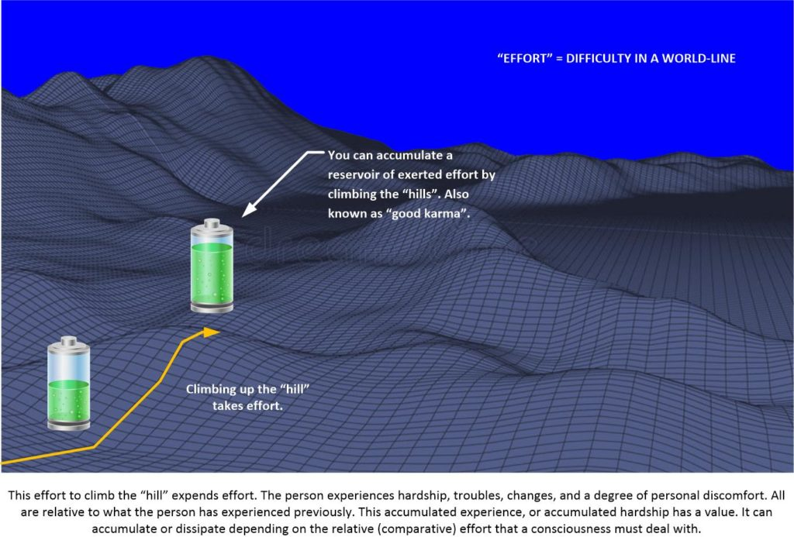
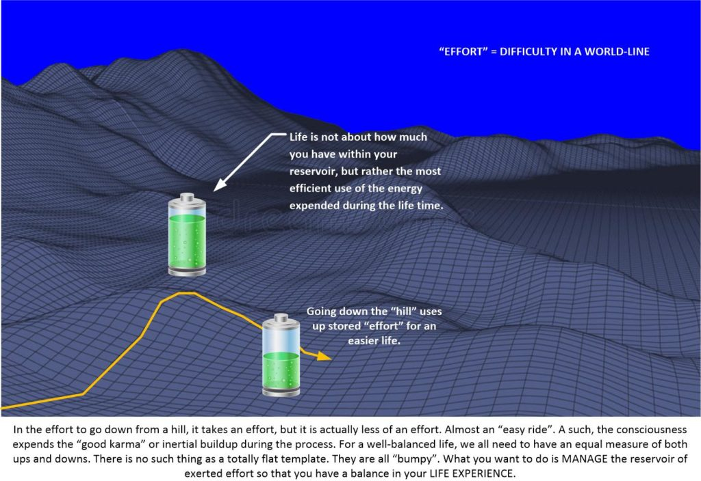

Prayers can seemingly cancel each other out. Yikes!
This happens, and the larger the number of affirmations you have, the greater the risk you have in having them cancel out each other. It happens, and you have to be aware and careful about your affirmations. Most certainly, the simple and sweet rule applies. Do not get too hung up on elaborate campaigns. Keep things simple.
Let’s talk about this here.
An example
This is a true example that was sent to me.
A MM follower had a problem. (Most of us do, but this has to deal with his affirmations. He felt that he was “spinning his wheels”.) While there were all sorts of things going on in his life, his most important two affirmations had not yet been realized. It had been at least a year maybe longer.
And while I told him that it takes time for the more distant goals to be realized, he argued that he must be doing something wrong.
So, after a few probing questions, he let me see his list of prayer affirmations, and at the top, under the heading “Most important” were two affirmations. They were…
- Be the CEO of a large and important company.
- Have a nice calm, happy and peaceful life.
Now, of course, it is possible to have both. It is not impossible. For with affirmation prayers, anything is possible. It’s just that some things require more world-lines to traverse to get to.
I suggested to him to do one or the other. Not both simultaneously.
And why you might ask…

Pick the one that he desires first, and then work towards it.
The reason for this, is that the combination of both together is going to be a difficult one to obtain quickly. Now I said “quickly”. I did not say unobtainable. His combination made quick implementation of his desires rather problematic.
How to understand this…
When your objective prayers are not being realized that means that there might be one or more of a number of things going on.
- Your prayer goal takes a large number of world-lines to traverse. It is farther away than your would like, and you have yet to reach it.
- Your goal is in conflict with another goal, thus obtaining both goals together sends your ultimate objective further down the time track.
- Your goal is off your pre-birth world-line template and you have not approved or blessed a slide to get off your fated life.
- You are being blocked by non-physical issues that you are unaware of.
- Your prayer is simply not possible within your template.
Regarding this last point…
Anything and everything is possible in our reality. In the movie The Craft (1996), the three other witches placed curses, hexes and spells on a girl in their coven. Her life turned to shit, and even her parents died. Then, after running a prayer / spell campaign she awoke to a new reality. One where her parents didn’t really die as was reported on television, it was all a bad mistake.
Anything is possible in this reality.
It’s just that there is a measure of your opposition to change that plays a role. And I want to discuss that right now.
Inertia
Our “reality universe” in both the physical reality, and the non-physical reality has this quality, or attribute known as “inertia”. It is measurable, and there have been many studies on it. Essentially, inertia is the resistance to change. We see this everyday.
If you are running and you want to stop suddenly, you end up toppling and going heads over heals. Or if you are trying to push a car that is broken down, its hard to get it moving, but once it starts to roll, it is so much easier. All of this is known as “inertia”.
Inertia Inertia is the resistance of any physical object to any change in its velocity. This includes changes to the object's speed, or direction of motion. An aspect of this property is the tendency of objects to keep moving in a straight line at a constant speed, when no forces act upon them.
Now, I want the reader to take into account that there is no such thing as “time”, and since there is no such thing…
…that means that the affirmations that you made last year has the same validity or “juiciness” as if you were making them today. And thus all the affirmations and writings that you have ever done is part of the big stew that you have been cooking all your life to get to the point where you are now.
We can refer to this characteristic as the inertial component of an affirmation / prayer campaign.
An Illustration
Let’s look at this example.

We see that the “hills” and valleys” of a topographical world-line map that is representative of the MWI is a measure of how difficult, stressful, or contentious a person’s life might be RELATIVE to the other world-lines that preceded it.
And here we see that you can accumulate benefit by climbing these “hills”…

And here I make the point that effort, strife, discomfort accumulates a specific type of experience that the consciousness can use.
How it is used depends on many things.
As we go “up the hill” in the MWI topographical map, we can also go “down the hill” upon the topographical map. And the ease of your life would be wholly a function of the release of the “good stuff” or “good karma” that you have accumulated during your travels.
As shown here…

But we can consider the benefits and liabilities of this accumulated effort in dealing with strife to be similar to that of inertia.
You climb the “hills” and you experience discomfort. You do down the “hills” and you experience a relatively easy period of time.
If we consider it to be analogous to “karma” as well as “inertia” then we have a real actual characteristic that is fundamental to our movement within the MWI and when we go from world-line to world-line.
This can be counter intuitive. After all, how can you “gain something” when you expend effort?
And I am here to tell you that no matter what you do in life, everything is inner connected.
So when you make a prayer affirmation campaign a few years back, the impressions that they made still slings to your being. Even though (for instance) you recognize that that you made some grievous errors in judgment when you defined those prayers.
Back to the example
So here, let’s go back to the example of the follower who is upset that he is not achieving the life of comfort and success as he pictured in his affirmation prayer campaign.
His life apparently isn’t going anywhere.
He seems stuck in his current situation.
He is frustrated, and he desperately wants that vision of a new life. You know which one. Something like this…
Ah.
There are many things at play. But I am willing to wager that the primary contributors are that his prayers counter-act each other, and ended up putting his goals in a far-away location on the MWI, as well as residual inertial influence of previous desires, wishes and vocalizations.
Time does not exist.
So the things that he said, and the writings that he made, and the actions that he dreamed of and contemplated upon has created a “tablecloth” upon which his new (and latest) prayer affirmations rest upon.
And while we want to believe that each and every new affirmation prayer campaign is a “new slate” from which to conduct our desires and goals, it is in all actuality a new meal that is placed on a tablecloth already soiled by your previous dining efforts.
In this particular case, I believe that it is a combination of things going on that has set his goals far off “in the distance” (MWI speaking)…
- Too complex of a goal.
- Characteristics of that goal that are too specific for immediate implementation.
- A history of other wishes, desires, actions, or verbalization’s that further remove his goal form easy direct access.
Such as…
“Oh the boss is an idiot. I would never work like he does”
or,
“It’s a hard life. having a calm life is just a dream and wishful thinking”
or,
“Who needs money and the lifestyle of a boss? I’m happy as I am right now”
For him to move forward, he needs to counter act all what he has created over the years and then build upon this new foundation with his affirmations. Then he needs to adjust his affirmation campaign to be simpler. Concentrate on it step by step and don’t but too many big enormous desires without laying a foundation to travel upon.
Conclusion
Keep in mind that everything we do has an accumulated characteristic that color and alters the prayer campaign. I do not believe that it can completely render the campaign inept and non-functional, but rather that they tend to add a few “extra” world-lines between you and your objective. For you to advance forward you need to be of clear mind and purpose, and control any negative and counter active thoughts and actions that might have developed into habitual problems within your life.
If you do, you can be guaranteed of speedier implementation of your desires.
Best Regards.